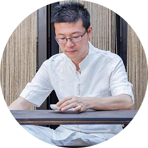

衣窝疯
国内反传统婚纱礼服行业先行者
品牌介绍
BRAND INTRODUCTION
衣窝疯是中国首家专注婚纱礼服行业的B2B平台
为影楼提供最低成本的婚纱礼服采购及三个月内新款调换以
0库存0积压降低成本为核心减少影楼50%婚纱礼服闲置
帮助国内中小型影楼快速突破传统批发销售模式
弥补款式短板解决婚纱礼服款式少、款式老等缺点
并打通行业全渠道
带领影楼从低频转型高频市场
名师指导3个月保证保底收益
提升100%业绩，真正为影楼行业转型带来
新模式,新服务，新市场
为影楼提供最低成本的婚纱礼服采购及三个月内新款调换以
0库存0积压降低成本为核心减少影楼50%婚纱礼服闲置
帮助国内中小型影楼快速突破传统批发销售模式
弥补款式短板解决婚纱礼服款式少、款式老等缺点
并打通行业全渠道
带领影楼从低频转型高频市场
名师指导3个月保证保底收益
提升100%业绩，真正为影楼行业转型带来
新模式,新服务，新市场
业务介绍
BUSINESS INTRODUCTION
衣窝疯城市合伙人计划
- 衣窝疯“礼服管家 金牌服务”
（50%成本节约，100%业绩提
升）1.98万 - 1.实体产品：提供1.98万的礼服产品 （贵宾折实价货品，自由选款 ）
- 2.增值服务：提供1.98万的礼服服务（3个月全新未使用过的礼服100%等价置换）
- 3.培训服务：提供1.98万的落地营销系统（提升C端复购的实战系统）
- 4.盈利模式：为影楼打造专属礼服商城（影楼0成本坐享50%销售分成）
- 衣窝疯“礼服管家 银牌服务”
（升级礼服馆，无需培训，立即赚钱）
9800元 -
1.盈利模式：为影楼打造专属礼服商城
- l 总部负责礼服图片上架/快递寄送/售后服务（无需采购，补充款式短板，增加复购率）
- l 影楼拥有独立店铺标示/可以自主定价/自主营销活动/独立后台操作；
- l 微商城商城具有二级分销模式，更好拓客
- l 影楼无运作成本，坐享50%销售分成
- 2.营销服务：辅助影楼/营销活动2次
- 3.增值服务：开启租衣新体验+新模式（给予用户高端包装+品质服务）
团队介绍
TEAM INTRODUCTION
-
｜
|
孙沄淏 -
1999创立第一家公司爱迪舞台背景公司创立了2年成为的影楼背景行业的标杆
2003创立吾特异婚纱礼服公司，以个性张扬和标新立异成为礼服行业的一批黑马，全国开了6家直营店！
2008，做了一家中国影楼的橱窗设计和影楼的影棚设计公司！也很幸运成为当时行业的的新宠！
2014年，在英国成立了一家美洛凯蒂高级订制公司、同时又在苏州开了一家帝凡国际婚纱摄影
2016起,建立了衣窝疯礼服共享平台！
-
｜
|
王挺 -
2008年 出版《久赢真经》销售心理学专辑和同名书籍
2010年 出版《赢销沙盘》以及《营销必修课》培训专辑 获中国百佳讲师称号
2012年出版《生命列车》原创音乐CD
2013年应邀进入移动互联产业，成为魔漫相机联合创始人，一年之内破1亿用户，估值2亿美金，获阿里A轮亿元投资
2014年创立漫生活品牌，6个月内以数千万估值获天使轮投资...
2014年漫生活旗下独立成立景致家品牌 中国首个生活必需品O2O微商平台
2015年 成立初心会-反传统创业社群平台 3个月覆盖118个城市 4个国家
-
｜
|
王栋
-
2004年至今一直从事创新TRIZ和社群店商的学习和研究工作，研究的课题是TRIZ技术的商业化进程和社群店商中受众驱动，社群众筹和社群运营；
2004年至2009年主要以学习实践为主；
2009年担任中国技术创新委员会理事；
2010年广东省创新方法研究会研究院及国家创新工程师（二级）
2010年至今主要关于TRIZ技术的研究、实践和培训
2010年至今从事互联网项目、社群店商的研究，时间和培训。